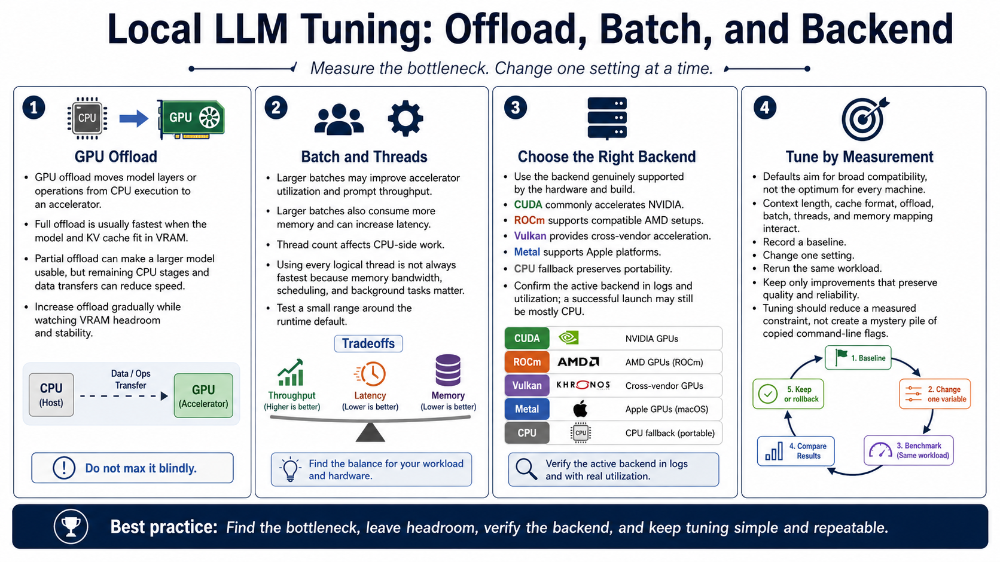

GPU Offload and Runtime Settings
Connecting to LMS... Progress: in progress

Narration
GPU offload moves model layers or operations from CPU execution to an accelerator. Full offload is usually fastest when the model and cache fit in VRAM. Partial offload can make a larger model usable, but each remaining CPU stage and data transfer can reduce speed. Increase offload while watching VRAM headroom and stability rather than setting the maximum blindly.
Batch settings affect how much prompt work is processed together. Larger batches may improve accelerator utilization and prompt throughput but consume more memory and can increase latency. Thread count affects CPU-side work; using every logical thread is not always fastest because memory bandwidth, scheduling, and background tasks matter. Test a small range around the runtime default.
Select the backend that is genuinely supported by the hardware and build. CUDA commonly accelerates NVIDIA devices. ROCm supports compatible AMD configurations, Vulkan can provide cross-vendor acceleration, Metal supports Apple platforms, and CPU fallback preserves portability. Confirm the active backend in logs and utilization. A successful launch may still be running mostly on the CPU.
Defaults aim for broad compatibility, not every machine's optimum. Context length, cache format, offload, batch, threads, and memory mapping interact. Record a baseline, change one setting, rerun the same workload, and keep only improvements that preserve quality and reliability. Tuning should reduce a measured constraint, not create a mysterious collection of copied command-line flags.